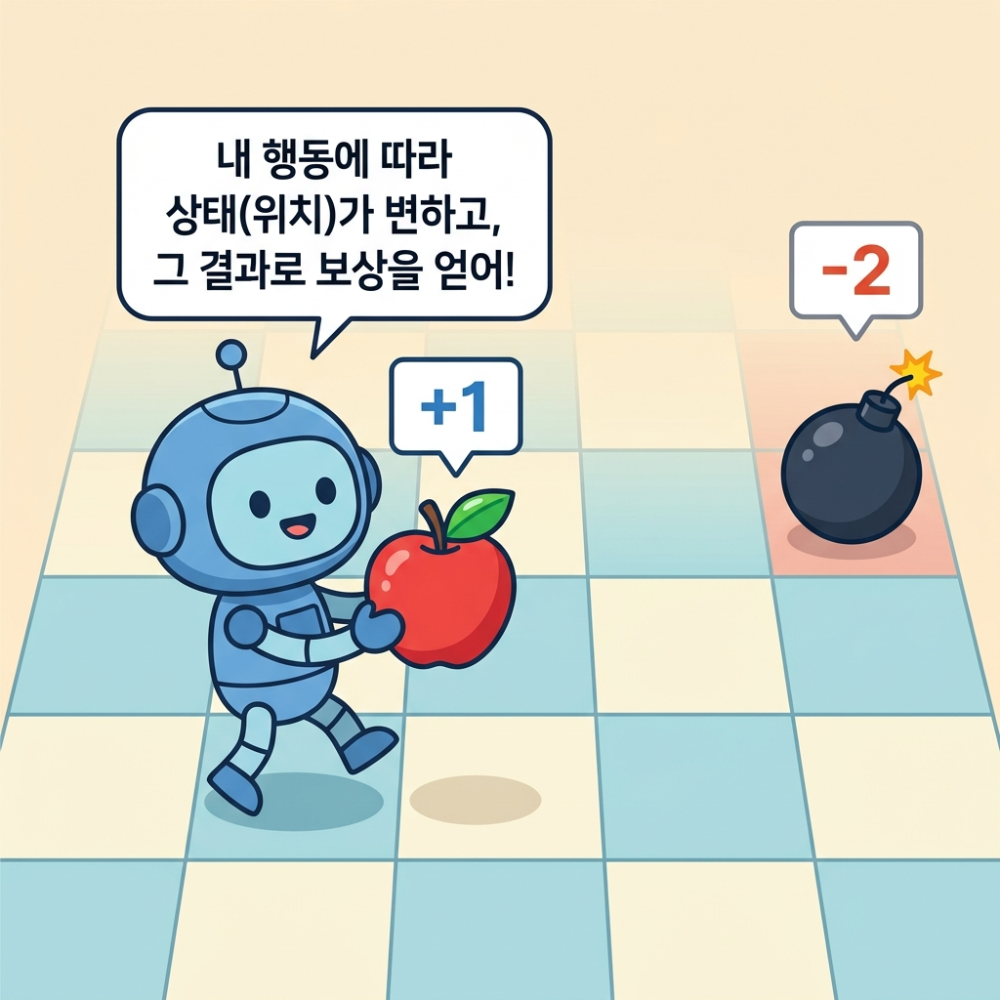
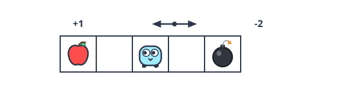
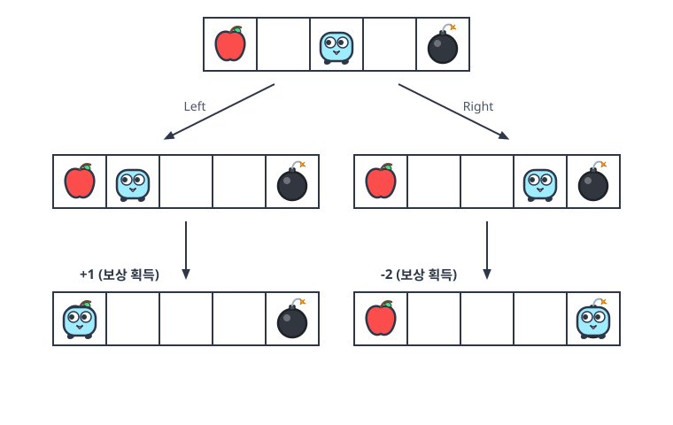
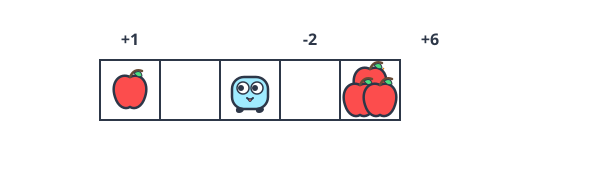
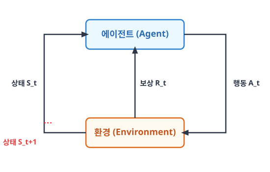

05.1 마르코프 결정 과정(MDP)이란?
그림 05-1 오즈의 숲길(Environment)에서 상태(노란 벽돌)를 딛고 상자 열기(Action)를 해 보상(금열쇠)을 획득하는 도로시와 지니
마르코프 성질 위에 주체적인 의사결정(Decision)이 결합된 강화학습의 기본 뼈대인 마르코프 결정 과정(MDP)을 배웁니다. 에이전트와 환경이 상태, 행동, 보상을 서로 교환하며 상호작용하는 다이내믹 루프를 지니 요정과 도로시의 모험 속 비유를 바탕으로 정복해보아요!
우리는 앞서 4강 마르코프에서 안드레이 마르코프의 생애와 마르코프 성질의 기초를 학습했습니다. 이번 장부터는 여기에 주체적인 의사결정(Decision)이 개입되는 동적 시스템으로 확장한 수학 프레임워크인 마르코프 결정 과정(MDP)을 정의하고 배웁니다.
마르코프 결정 과정Markov Decision Process, MDP에서 ‘결정 과정’이란 ‘에이전트가 (환경과 상호작용하면서) 행동을 결정하는 과정’을 뜻합니다.

05.1.1 강화 학습과 환경의 변화
구체적인 예와 함께 MDP의 성격을 살펴봅시다.
‘마르코프 성질’의 의미는 05.2.1절 참고
05.1.2 그리드 월드 구체적 예시
에이전트가 자신의 행동에 따라 환경의 상태를 실시간으로 바꾸어 나가는 문제를 이해하기 위해 구체적인 ‘그리드 월드’ 예시로 시작해 봅시다.
05.1.2.1 에이전트와 환경, 보상의 정의
먼저 [그림 05-1]을 보죠.
세상은 격자grid로 구분되어 있고 그 안에 로봇이 있습니다. 로봇은 격자 세상에서 오른쪽 또는 왼쪽으로 이동할 수 있습니다. 이 책에서는 그림과 같은 세계를 ‘그리드 월드’라고 부르겠습니다.
그림 05-1 MDP 문제 예시: 그리드 월드

강화 학습 용어로 이야기하면 로봇이 에이전트agent이고 주변이 환경environment입니다.
에이전트는 오른쪽으로 이동하거나 왼쪽으로 이동하는 두 가지 행동을 취할 수 있습니다.
또한 그림에서 그리드의 가장 왼쪽 칸에는 사과가 있고 가장 오른쪽 칸에는 폭탄이 있습니다. 이들은 로봇에게 주어지는 보상reward입니다. 사과를 얻을 때의 보상은 +1, 폭탄을 얻을 때의 보상은 -2로 하겠습니다. 빈칸의 보상은 0입니다.
05.1.2.2 타임 스텝과 상태 전이 개념
이 문제에서는 에이전트가 행동할 때마다 상황이 변합니다.
예를 들어 왼쪽으로 두 번 연달아 이동했다고 해보죠. 그러면 에이전트는 +1의 보상을 얻습니다. 반대로 오른쪽으로 두 번 이동하면 -2의 보상을 얻습니다.
이러한 에이전트의 이동을 [그림 05-2]처럼 나타낼 수 있습니다.
그림 05-2 MDP의 상태 전이

그림과 같이 에이전트의 행동에 따라 에이전트가 처하는 상황이 달라집니다.
이 상황을 강화 학습에서는 상태state라고 합니다.
MDP에서는 에이전트의 행동에 따라 상태가 바뀌고, 상태가 바뀐 곳에서 새로운 행동을 하게 됩니다. 참고로 그림에서도 알 수 있듯이 지금 문제에서 에이전트에게 최선의 행동은 왼쪽으로 두 번 이동하는 것입니다. 그래야 가장 많은 보상을 얻을 수 있습니다.
NOTE_ MDP에는 ‘시간’ 개념이 필요합니다. 특정 시간에 에이전트가 행동을 취하고, 그 결과로 새로운 상태로 전이합니다. 이때의 시간 단위를 타임 스텝time step이라고 합니다. 타임 스텝은 에이전트가 다음 행동을 결정하는 간격이기 때문에 구체적인 단위는 어떤 문제를 풀려는지에 따라 달라집니다.
이번에는 [그림 05-3]의 문제를 생각해봅시다.
그림 05-3 또 다른 세계(환경)

이 그림에서 그리드의 왼쪽 끝에는 보상이 +1인 사과가 있고, 에이전트의 바로 오른쪽에는 보상이 -2인 폭탄이 있습니다. 그리고 그 너머 오른쪽 끝에는 보상이 +6인 사과 더미가 있습니다.
이 문제에서 오른쪽으로 이동하면 즉시 얻는 보상은 마이너스지만, 한 번 더 오른쪽으로 이동하면 +6짜리 사과 더미를 얻을 수 있습니다. 따라서 이 문제에서 최선의 행동은 오른쪽으로 두 번 이동하는 것입니다.
이 예에서 알 수 있듯이 에이전트는 눈앞의 보상이 아니라 미래에 얻을 수 있는 보상의 총합을 고려해야 합니다.
즉, 보상의 총합을 극대화하려 노력해야 합니다.
05.1.3 에이전트와 환경의 상호작용
MDP에서는 에이전트와 환경 사이에 상호작용이 이루어집니다.
05.1.3.1 MDP 피드백 루프와 사이클
이때 명심해야 할 사실은 에이전트가 행동을 취함으로써 상태가 변한다는 점입니다. 그에 따라 얻을 수 있는 보상도 달라지죠.
그림으로 표현하면 다음과 같은 관계입니다.
그림 05-4 MDP의 사이클

[그림 05-4]에서는 시간 t에서의 상태가 St입니다.
이 상태 St에서 시작하여 에이전트가 행동 At를 수행하여 보상 Rt를 얻고, 다음 상태인 St+1로 전환됩니다.
이러한 에이전트와 환경의 상호작용은 실제로 다음과 같은 전이를 만들어냅니다.
\[S_0, A_0, R_0, S_1, A_1, R_1, S_2, A_2, R_2, \cdots\]이 시계열 데이터는 첫 번째 상태를 S0에서 시작합니다.
상태 S0에서 에이전트가 행동 A0을 수행하여 보상 R0을 얻고, 시간이 한 단위만큼 흘러 상태가 S1로 변합니다. 다음 상태인 S1에서 에이전트가 행동 A1을 수행하여 보상 R1을 얻고, 다음 상태인 S2로 변하는 흐름이 계속됩니다.
05.1.3.2 보상 획득 시점 정의(R_t vs R_t+1)
강화 학습에서는 다음과 같이 보상의 시점을 Rt로 잡기도 하고 Rt+1로 잡기도 합니다.
• 상태 St에서 행동 At를 수행하고 보상 Rt를 받고 다음 상태인 St+1로 전환 • 상태 St에서 행동 At를 수행하고 보상 Rt+1을 받고 다음 상태인 St+1로 전환
이처럼 보상을 Rt로 처리할 수도, Rt+1로 처리할 수도 있습니다.
이 강의에서는 프로그래밍하기에 더 편리한 첫 번째 방식(Rt)을 택했습니다.
05.1.4 핵심 요약
이상으로 MDP의 기초를 익혔습니다.
- 상태 기반 환경: MDP에서는 에이전트의 행동에 반응하여 환경의 상태가 동적으로 변화합니다.
- MDP 사이클: 에이전트가 상태 St에서 행동 At를 수행하면 보상 Rt를 받고 다음 상태 St+1로 넘어가는 피드백 순환 구조를 이룹니다.
- 타임 스텝: 시간 단위를 쪼개어 에이전트와 환경이 순차적으로 의사결정을 주고받는 시간 간격을 뜻합니다.
다음 절에서는 MDP를 수식으로 표현해보겠습니다.